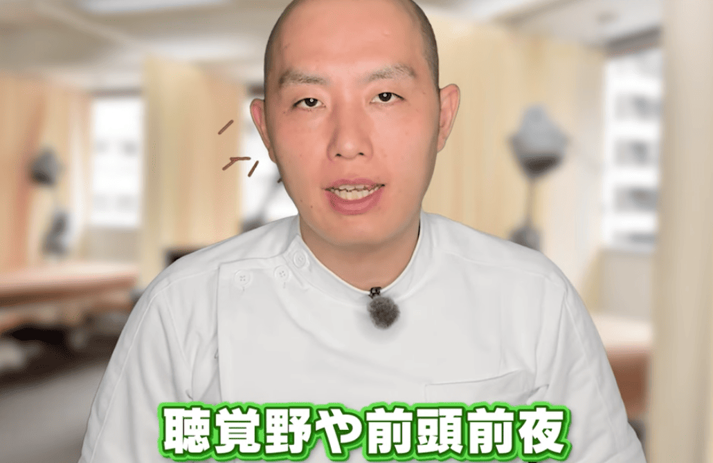
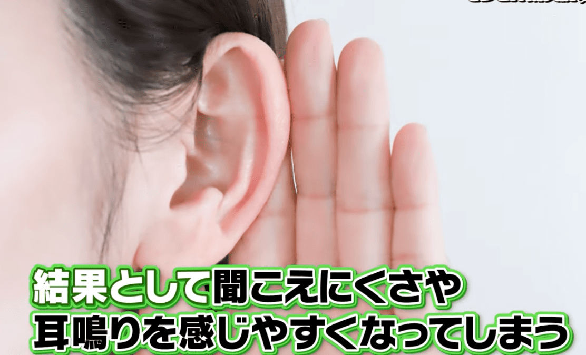
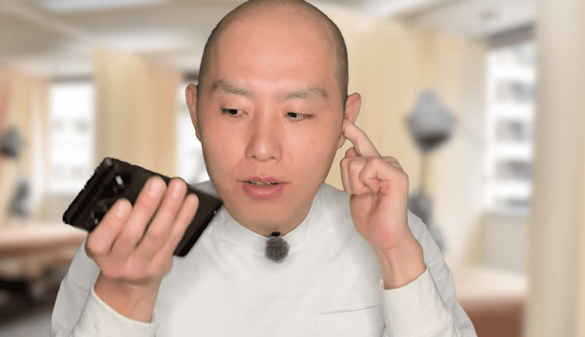
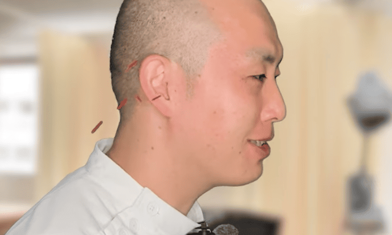
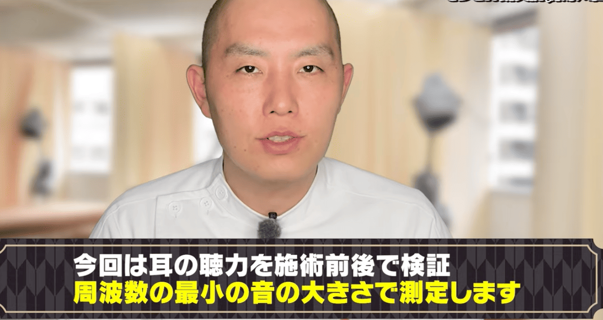
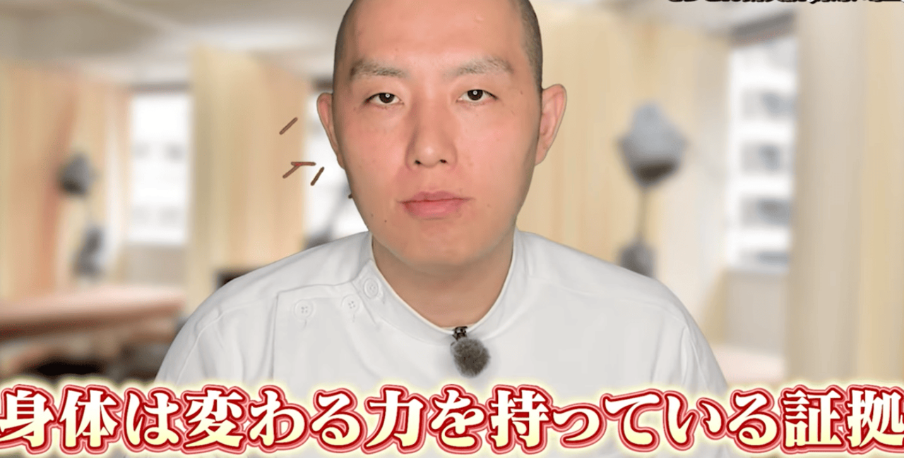

感音性難聴の鍼灸
内耳や中枢神経の障害で起きる感音性難聴。急性期は早期耳鼻科受診を最優先に、補聴器や通院と並行して耳の巡りをケアします。
まず知っておきたい要点と改善の流れ
感音性難聴は、音を感じ取る内耳やその奥の中枢神経系に障害が起きることで生じる最も一般的な難聴です。突発性難聴やメニエール病・急性低音障害型感音難聴など急激に発症する急性タイプと、加齢・騒音・薬剤・遺伝などにより緩やかに進行する慢性タイプがあります。急性期は早期の耳鼻咽喉科受診（ステロイドや血流改善薬等）が回復の鍵となり、慢性期は残存聴力の保護や補聴器・聴覚リハビリなどの専門支援が基本です。（公式解説）
このようなお悩みはありませんか？
- ✓高い音や小さな声から徐々に聞こえにくくなっている
- ✓騒がしい場所や複数の音の中で会話を聞き分けにくい
- ✓耳鳴りや音の歪み、めまい・ふらつきを伴うことがある
- ✓聞こえの不安から一日の終わりに強い疲労感を感じやすい
当院の施術アプローチ・改善の流れ
なぜ鍼灸で改善へ向かうのか？（作用機序の図解）
感音性難聴に対する鍼灸は、耳周囲・頸部の微小循環改善と聴覚・粘膜調整機序を通じて、お体本来の回復力を引き出します。

翳風・風池・合谷など、耳鼻咽喉領域の神経・血管と連動する経穴へ繊細にアプローチします。
首・顎まわりの深層筋緊張を緩め、内耳や粘膜周囲の滞った血流とリンパ循環を促します。
ストレスや睡眠不足で高ぶった交感神経を鎮め、音への過敏反応や粘膜の過剰反応を和らげます。
標準治療を妨げない設計で、生活支障度（THI等）の軽減と再発しにくい体調づくりを支えます。
院長YouTube解説・関連動画
感音性難聴は、内耳や中枢の神経系に障害があることで起こる難聴

感音性難聴は、内耳や内耳より奥の中枢の神経系に障害があることによって起こる難聴のことです。最も一般的な難聴で、特定の年齢以上になると、ほとんどの人がある程度の感音性難聴を感じます。
感音性難聴の特徴は、高音域の音を聞きとることが難しくなることや一度に複数の音を聞いた時特定一つの音を聞き分けることが難しくなることです。
感音性難聴には、急性のものと慢性のものがあります。慢性の場合の感音性難聴は、改善を行なっても回復することが難しい難聴です。
難聴では聴力を補うために補聴器を使うことが一般的ですが、慢性の感音性難聴の場合は補聴器を使っても聴力を補うことが難しいと言われています。
感音性難聴では、急性か慢性かによって原因が異なる

感音性難聴の原因は、加齢や病気、騒音など様々です。感音性難聴には急性のものと慢性のものがあります。急性は急激に起こる場合の感音性難聴で、慢性は少しずつ症状が進む感音性難聴です。
感音性難聴では、急性か慢性かによって原因が異なります。
急性の感音性難聴の主な原因は、突発性難聴やメニエール病や急性低音障害型感音難聴などの病気です。
慢性の感音性難聴の主な原因は、薬剤や騒音などです。加齢によって起こる難聴も慢性の感音性難聴の一つです。さらに生まれつき感音性難聴であることもあります。
加齢による変化:加齢に伴う内耳の変化は、感音性難聴の一般的な原因です。
騒音への曝露:高音量の騒音に長期間曝露されることで、内耳の細胞が損傷を受けることがあります。
遺伝的要因:いくつかの感音性難聴は遺伝的に引き継がれることがあります。
耳の感染症:中耳炎や内耳炎などの感染症が内耳に影響を与えることがあります。
頭部の外傷:事故や外傷によって内耳や聴神経が損傷を受けることがあります。
特定の薬剤の使用:アミノグリコシド系抗生物質、一部の抗がん剤、非ステロイド性抗炎症薬など、耳に毒性のある薬剤が感音性難聴を引き起こすことがあります。
病気や病状:メニエール病、自己免疫の病気、多発性硬化症、腫瘍など、耳や聴神経に影響を与える病気が原因で発生することがあります。
突発性難聴:明確な原因が特定できない突然の聴力喪失のことです。ストレスやウイルス感染が関与している可能性があります。
感音性難聴は、複数の音の中の特定の音を聞き分けることが難しい

感音性難聴では、高音域の音を聞きとることが難しくなったり一度に複数の音を聞いた時特定一つの音を聞き分けることが難しくなったりします。高齢者に起きる耳が遠くなることなどの加齢によって起きる難聴も感音性難聴の一つです。
感音性難聴を発症する前にはある程度の兆候が見られます。
騒がしい部屋で聞き取りにくくなることや小さい音や高音などの特定の声が聞こえなくなること、テレビやラジオの音量を周りの人がうるさく感じるほどの音量にすること、耳鳴りなどです。
感音性難聴が起こると、難聴の症状だけでなく、周りの音が入ってこないため不安を大きく感じるようになったり一日の疲れが非常に大きくなったりすることもあります。
聴力低下:一般的に、高音域から聴力が低下し始めます。初期段階では、人の声や背景音が聞き取りにくくなることがあります。
言葉の理解困難:背景雑音の中での会話の理解が特に困難になることが一般的です。
耳鳴り:耳鳴りは感音性難聴の一般的な症状で、耳の中で鳴るような感覚を伴います。
音の歪みや異常な聴覚感覚:音が歪んで聞こえたり、以前は快適だった音量が不快に感じられたりすることがあります。
平衡感覚の問題:内耳は平衡感覚にも関与しているため、めまいやバランスを保つことが難しくなることがあります。
一方の耳での聴力低下:片耳だけに症状が現れることがあります。
音が遠く感じる:音が遠く、あるいはボリュームが下がったように感じられることがあります。
急性の場合回復が期待できるが、慢性の場合は回復は期待できない

感音性難聴は、急性の場合は改善を行うことで回復が期待できますが慢性の場合は回復はできません。
慢性の感音性難聴の回復が難しいのは、今のところ、音を感じるために重要な内耳の有毛細胞が再生する能力を持っていないことや有毛細胞を再生させる方法が特にないためであると言われています。
回復が望めない感音難聴の症状が現れた場合は、できるだけ早く難聴リハビリテーションを行うことが大切です。
急性の場合は、主に薬を使って改善を行います。ステロイド薬や浸透圧利尿剤、血管循環改善薬などの薬を使って改善を行うことと同時に、生活習慣の改善も行います。
1. 聴力補助装置の使用
補聴器: 軽度から中等度の感音性難聴に対して、補聴器が広く用いられます。これは、聴力を増幅し、日常生活におけるコミュニケーションを支援します。
骨伝導補聴器: 骨伝導を利用して音を内耳に伝える補聴器も、特定のケースに適しています。
2. コクリアインプラント
重度の感音性難聴や全聾の場合、コクリアインプラントが有効な選択肢になることがあります。これは、外科手術によって内耳に直接電極を埋め込み、音を電気信号に変換して聴神経に刺激を与えるデバイスです。
3. 薬
原因によっては、ステロイドや血流改善薬などの薬が処方されることがあります。特に突発性難聴の場合、早期にステロイド改善を行うことが推奨される場合があります。
4. 手術
感音性難聴の原因が明確な場合、それに対する外科手術が必要な場合があります。
5. リハビリテーション
聴覚リハビリテーションや言語聴覚法を通じて、聴力の改善とコミュニケーションスキルの向上を図ります。
6. 生活習慣の改善
聴力保護、騒音露出の管理、健康的な生活習慣の維持など、日常生活において聴力を守るための措置が重要です。
7. カウンセリングとサポート
本人とその家族へのカウンセリングやサポートを提供し、感音性難聴がもたらす影響に対処します。
1. ステロイド（副腎皮質ステロイド）
例: プレドニゾン、デキサメタゾン
効果: ステロイドは強力な抗炎症作用を持ち、内耳の炎症を減少させることで聴力の改善を助ける可能性があります。特に突発性難聴の初期段階での改善に用いられることが多いです。
2. 血流改善薬
例: ペンタキシフィリン（トレンタール）
効果: 内耳への血流を改善し、酸素と栄養素の供給を促進することで、耳の回復を助ける可能性があります。
3. 抗ウイルス薬
例: アシクロビル、バラシクロビル
効果: ウイルス感染が原因と考えられる場合に使用され、ウイルスの増殖を抑えることで感音性難聴の改善に役立つ可能性があります。
4. 抗酸化剤
例: ビタミンC、ビタミンE、グルタチオン
効果: 酸化ストレスによる細胞損傷の軽減を助けることで、内耳の保護と聴力の回復をサポートする可能性があります。
1回の鍼で聴力は戻るのか検証

当院では耳鳴りや頭鳴り、耳つまりの人を多く拝見しています。「1回の施術で聴力は改善するのか」という質問はそんな臨床の現場で何度も質問されてきた素朴な質問です。実際の鍼の現場では。施術の直後に音がクリアに聞こえる。耳のこもった感じが消えた、そう話す人は少なくありません。これは気のせいではなく医学的に説明できる鍼の効果です。
そこで今回は鍼1回で聴力は本当に変わるのかリアル検証を行います。聴力は耳の奥の方にある蝸牛という器官で作られています。蝸牛には外から入ってきた音の振動を電気信号に変える有毛細胞というセンサーが並んでいてそこから聴神経を通って脳へと音が伝わります。蝸牛は非常に繊細で、わずかな血流の低下でも機能が落ちてしまうことがわかっています。
内耳を栄養をしている内耳動脈は非常に細く1本しか通っていません。顔や首、肩が強張って血管を圧迫すると蝸牛への酸素供給が減り、結果として聞こえにくさや耳鳴りを感じやすくなります。
また、内耳動脈の血流は自律神経と深い結びつきがあります。ストレスで交感神経優位になると血管は収縮し耳の血流も低下します。逆に副交感神経優になると血管が拡張して血流が増えます。鍼灸は自律神経を整える作用があり、首から肩にかけての筋緊張の緩和、血流改善が目的です。そのため、理論的には鍼を1回するだけで一時的に聴力が変化する可能性はあります。
今回は耳の聴力を施術前後で検証、周波数の最小の音の大きさで測定します。使用するのはスマートフォンの聴力測定のアプリです。
鍼を打つツボは耳の後ろの翳風、耳たぶの下の完骨、首回りの風池といった耳に深くかかわるツボです。これらのツボは実際に施術でも使っています。右耳だけ施術を行い、左と比較します。
施術時間は10分、鍼は髪の毛ほどの細い鍼、鍼を入れる深さは1mm、刺激の量は全くないようなレベルで行います。
鍼灸院で見る現実は非常の恐ろしく、他の鍼灸院で施術を受けて悪化した人が来ることも多いです。強い針で耳鳴りが悪化して当院に来院されるのです。そのため、当院の考え方では刺激の多い鍼は厳禁です。
聴力を確認したところ、15000hzが聞こえなかったため、鍼をして15000hzが聞こえるようになるのか検証します。
耳周りのツボを全部刺激したところ、15000hzが聞こえるようになりました。人の耳は1dbの違いでも何となく聞こえ方が違うと感じることがあります。特に高音域は血流や神経伝達の影響を受けやすいです。そのため、今回の聴力の改善は耳周辺の血流の改善や筋緊張の緩和などが一時的に影響し改善したと考えられます。
鍼を受けた直後は副交感神経が優位になるため脈拍や呼吸もゆっくりになります。これは血流が改善して全身の循環が改善されている証拠です。聴力の変化は自律神経が整ったサインなのです。もちろんすべての人に同じような結果が出るわけではありません。体の一部を整えることで感覚器の反応までも変わるということは鍼灸の可能性を示す興味深い結果です。
聞こえと呼んでいるものは耳だけではなく脳の反応で成立しています。音が脳に伝わった後どう認識するか決めているのは聴覚野や前頭前野という脳の中枢の働きです。鍼を打つことで筋肉や血流を整えるだけではなく、脳の興奮と抑制のバランスがリセットされ結果的に聞こえやすい状態に切り替わることがあります。
この状態は神経の可塑性とも関係しています。脳は常に変化する内臓で刺激や体験によって神経ネットワークを作り変えるのです。鍼刺激もまた脳に対し新しい入力を与えることで音の感じ方そのものを再構築しているのかもしれません。だからこそ1回の施術でわずかな変化を感じたことは回復のスタートラインに立った証拠なのです。
もちろん慢性的な難聴や耳鳴りに関しては継続的な施術が必要です。しかし、短時間の変化は体が確かに変わる力を持っているという証拠になるのです。聴力トラブルは年齢、ストレス、姿勢など様々な要因が重なって起きています。そのため薬では効かない領域にアプローチする鍼灸は非常に有効なアプローチ方法です。
聴力が残っている場合は、悪化しないようにすることが大切

難聴はそのまま放っておくと、抑うつ状態になったり子供の場合は学習障害が起こったりすることもあります。
慢性の感音性難聴が起こった場合でも、聴力が残っている場合には、補聴器や人工中耳を使って悪化しないようにすることが大切です。また、少しでも気になる症状がある場合はできるだけ早く病院に行くことをお勧めします。
耳鼻咽喉のお悩みのツボ図解とセルフケア
実際の施術ではお一人おひとりの体質・症状に合わせて選穴しますが、耳鼻咽喉領域（アレルギー性鼻炎・耳鳴り・突発性難聴併用・顎関節症）の臨床でよく用いられる代表的なツボの目安です。

📌 代表的なツボの詳細一覧表を開く（6穴） ▼
| ツボ名 | 位置の目安 | 主な狙い | セルフケアの注意点 |
|---|---|---|---|
| 聴宮（ちょうきゅう） | 耳の穴の前（耳珠）のすぐ前、開口時のくぼみ | 耳鳴り・耳閉感・顎関節周囲の血流改善 | 口を軽く開けてごく優しく（顎痛時は無理に開けない） |
| 翳風（えいふう） | 耳たぶの後ろ、乳様突起と下顎骨の間のくぼみ | 耳鳴り・めまい・難聴ケア・耳周囲循環改善 | 顔面神経近接のため強圧を避け温め・軽圧で |
| 迎香（げいこう） | 小鼻の左右の膨らみのすぐ脇（ほうれい線上） | 鼻づまり・アレルギー性鼻炎の鼻腔通気改善 | 皮膚が薄いためこすらず指先で軽く押す |
| 印堂（いんどう） | 左右の眉頭のちょうど中央 | 鼻づまり・副鼻腔の重だるさ・自律神経鎮静 | 指の腹でゆっくり5秒圧迫または優しくさする |
| 下関（げかん） | 耳の前、頬骨のアーチの下縁のくぼみ | 顎関節症・咬筋の過緊張・耳周囲の放散痛緩和 | 圧痛が出やすいため痛気持ちいい手前の弱圧で |
| 完骨（かんこつ） | 耳後ろの硬い骨（乳様突起）の後下方のくぼみ | めまい・耳鳴り・胸鎖乳突筋〜後頭部の緊張緩和 | めまい発作時は頭を動かさず座位で軽く押さえる |
国際査読論文の科学的エビデンス
国際的な医学データベース（PubMed・Cochrane等）で報告されている耳鼻咽喉領域（アレルギー性鼻炎・耳鳴り・突発性難聴併用・顎関節症）領域の代表的な査読済み鍼灸研究をまとめています（標準治療との併用や研究上の限界を含めて正確に掲載）。
📚 査読論文データ・PubMed出典リンクを開く（4件） ▼
| 年・研究デザイン | 対象・規模 | 主な結果 | 限界・出典 |
|---|---|---|---|
| 2013年 大規模多施設RCT | 季節性アレルギー性鼻炎 422名（ドイツ） | 7〜8週のRQLQ QOLがシャム比0.5点・薬単独比0.7点改善（P<0.001）、頓用薬使用も有意減少（P<0.001）。 | 1年目16週では群間差消失、臨床的意義は慎重評価。 Ann Intern Med (PMID: 23420231) |
| 2021年 メタ解析 | 耳鳴り 8 RCTs（n=504） | 生活支障度THI（MD -10.11, p<0.001）・TSI（MD -8.36, p<0.001）が有意改善。VASは有意差なし（p=0.06）。 | 組入れRCTの質・サンプル規模に限界あり。 Acupunct Med (PMID: 32772848) |
| 2026年 ネットワークメタ解析 | 突発性難聴 36研究（n=3,360・標準治療併用） | ステロイド等の標準治療への鍼灸併用で総有効率RR 1.19（p<0.0001）、3週間コースが推奨。 | エビデンス確実性は低く標準治療（早期ステロイド）併用が前提。 Complement Ther Med (PMID: 42918509) |
| 2023年 メタ解析 | 成人顎関節症 22 RCTs統合（n=471） | 標準治療併用で有効率RR 1.36・疼痛VAS MD -1.23と有意改善。 | GRADE確実性は低〜非常に低、さらなる高品質RCTが必要。 Medicine (PMID: 37746950) |
参考文献・出典
- 銀座そうぜん鍼灸院「感音性難聴の公式解説ページ」
- 2013年 大規模多施設RCT（季節性アレルギー性鼻炎 422名（ドイツ））— Ann Intern Med (PMID: 23420231)
- 2021年 メタ解析（耳鳴り 8 RCTs（n=504））— Acupunct Med (PMID: 32772848)
- 2026年 ネットワークメタ解析（突発性難聴 36研究（n=3,360・標準治療併用））— Complement Ther Med (PMID: 42918509)
- 2023年 メタ解析（成人顎関節症 22 RCTs統合（n=471））— Medicine (PMID: 37746950)
よくある質問（FAQ）
Q. 感音性難聴は鍼灸だけで聴力が完全に元に戻りますか？▼
Q. 突発的な聞こえにくさが出た場合、いつまでに病院へ行くべきですか？▼
あわせて読まれる関連疾患（耳鼻咽喉のお悩み）
ある日突然片耳などが聞こえにくくなる感音難聴です。発症早期の耳鼻科ステロイド治療を最優先に、早期併用や回復期の耳鳴り・めまいをケアします。
実際には音がないのに耳の中で雑音が聞こえる状態です。耳の血流や自律神経・脳の過敏さを整えるケアで軽減を目指します。
高度難聴から年月を経て回転性めまいを繰り返す遅発性内リンパ水腫に対し、専門医管理下で安定期のめまい誘因ケアを行います。
中耳のアブミ骨が硬くなり音の振動が伝わりにくくなる病気です。耳鼻科での精査・手術適応の判断を最優先に、術前後の体調や耳鳴りを支えます。
加齢による内耳の変化で高音から聞こえにくくなる老人性難聴。耳鼻科での補聴器調整を基本に、耳周囲の血流と巡りを整えます。
大音量の曝露で内耳が傷つく音響外傷。急性期は早期の耳鼻咽喉科受診と安静を最優先に、耳の血流を促す補完的ケアを行います。
おひとりで悩まず、まずはご相談ください
銀座本院・川口・大宮・横浜・博多・田無の各院でご予約を承っております。